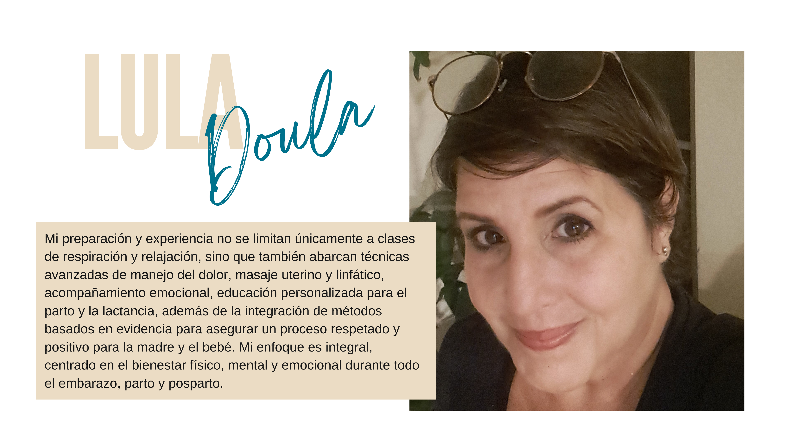

Doula de Parto Certificada en Puerto Rico
Apoyo respetuoso, continuo y basado en evidencia durante embarazo, parto y posparto, adaptado a ti.
¿Qué te ofrezco?
Como doula certificada y con más de 30 años de experiencia, te ofrezco apoyo personalizado para que vivas tu proceso de maternidad con seguridad y confianza, en San Juan, Caguas, Bayamón, Dorado y alrededores.
- Apoyo emocional y físico 24/7 en últimas semanas de embarazo
- Técnicas efectivas de alivio no farmacológico para el dolor
- Facilitación en la comunicación con el equipo médico
- Apoyo cercano en parto, primeras horas del posparto y lactancia.
- Seguimiento posparto a domicilio (opcional)

Maria de Lourdes Pérez “Lula” es esposa, madre y abuela con más de 30 años de experiencia educando y acompañando personas gestantes y sus parejas en Puerto Rico. Certificada como Educadora Perinatal y Monitriz bajo el [translate:Método Psicoprofilaxis Obstétrico], integra diversas filosofías y estrategias que promueven el bienestar físico y emocional para un embarazo y parto consciente, centrado y respetuoso.
¿Por qué escoger una doula de parto certificada en Puerto Rico?
Escoger una doula de parto es una decisión profundamente personal que puede marcar una gran diferencia en la experiencia del nacimiento. Una doula es una profesional capacitada que brinda apoyo emocional, físico e informativo continuo a la persona gestante antes, durante y después del parto, sin realizar tareas médicas.
1. Apoyo emocional constante
Durante el embarazo, el parto y el posparto, las emociones pueden ser intensas y cambiantes. La doula ofrece una presencia calmada, empática y sin juicios, ayudando a reducir la ansiedad, el miedo y la sensación de soledad. Su acompañamiento fomenta confianza y seguridad en el proceso natural del nacimiento.
2. Mejora de los resultados obstétricos
- Menor tasa de cesáreas.
- Menor uso de analgesia epidural u otras intervenciones médicas.
- Partos más cortos.
- Mayor satisfacción con la experiencia del parto.
3. Apoyo físico durante el trabajo de parto
- Masajes y cambios de posición.
- Técnicas de respiración y relajación.
- Uso de pelotas, agua tibia, aromaterapia, entre otros.
4. Facilita la comunicación con el equipo médico
La doula no toma decisiones por ti, pero te ayuda a entender tus opciones, a formular preguntas y a comunicarte de forma clara con los profesionales de salud, empoderándote para decisiones informadas.
5. Apoyo al acompañante
La doula también guía a la pareja o acompañante para brindar mejor apoyo y sentirse más seguros durante el proceso.
6. Continuidad del cuidado
A diferencia del personal médico, que cambia de turno, la doula permanece contigo brindando presencia constante.
7. Mejor experiencia posparto
Muchas doulas ofrecen seguimiento postparto, apoyando en lactancia, vínculo con el bebé, autocuidado y adaptación a la maternidad.
Escoger una doula en Puerto Rico significa ser acompañada con respeto, conocimiento y calidez en uno de los momentos más transformadores de la vida.